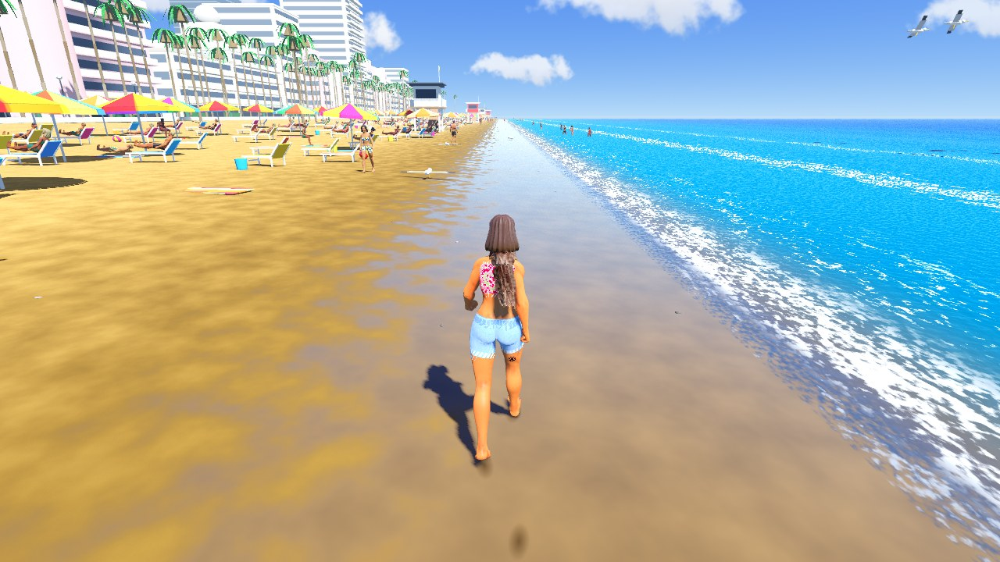
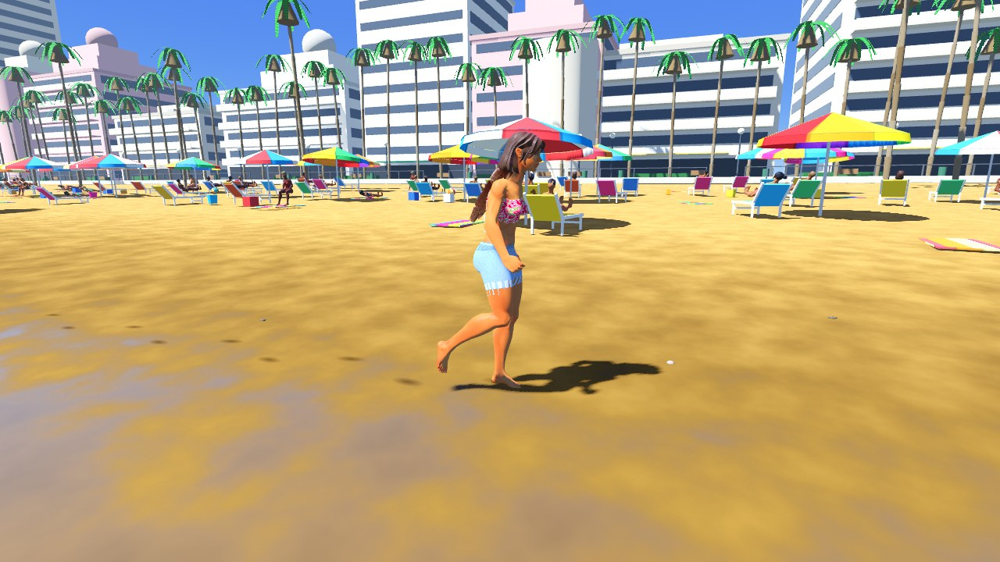
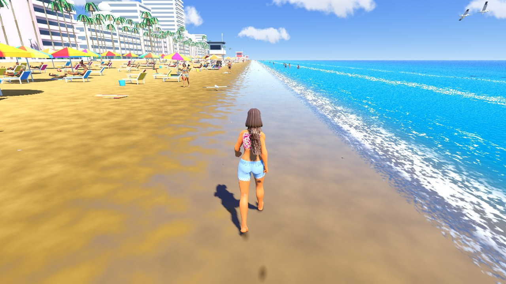

Beach · golden sand, fan palms and loungers
What the director asked each model for
ground3BBeach sand: golden, fine grain, wide wet band with a strong mirror sheet, few shells.
props7BBeach furniture, normal density: loungers with some towels, umbrellas on about a third of the loungers, some clutter (buckets, coolers, balls, bags); mixed bright fabrics, rainbow umbrellas.
vegetation3BLush vegetation on the beach: dense density, tall fan palms only, giant plants, some hedges.